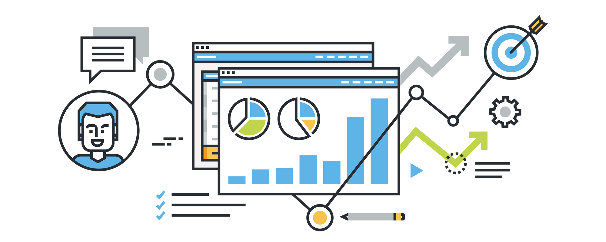

Team Profile


Group process:
- Our team had a better connection than the previous assignment due to working together for long periods from assignment two to now. We are more flexible and professional in business; for example, all team members are familiar with working speed, so we are keeping up on the track, which smoothly operates the project. Moreover, we can use the git hub easier than before, making it easy to control the project. Consequently, we improved almost all our mistakes in the previous work, developing teamwork skills and connections. Therefore, we are becoming a better team.
Career Plans:
- Our team members' dream occupations are all quite diverse
and have nothing in common except that they all include programming. Nghi aspires to be a security
engineer, Dong to be an AI engineer, Dat to be a front-end developer, and Quan to be a back-end
developer (in the form of a java programmer). With our team's different aims, there are both advantages
and disadvantages. The disadvantages are that we will have a more difficult time discussing more
specialized topics since our specialities are so dissimilar, and it will be more challenging to provide
comments or assistance on a member's job because of this disparity. On the other hand, the advantages
outweigh the disadvantages; our differences in experience allow us to provide feedback from different
perspectives to advance our project. We can also cover various aspects of our project because other
elements may require different specializations. Furthermore, working with people with varied backgrounds
allows you to understand their occupations better and collaborate with others who do similar tasks in
the future. We see this as an excellent chance to learn about the various disciplines of programming and
how people with diverse backgrounds can collaborate to build a cohesive product.
- In addition, this project is an opportunity for each member to try a new role different from the dream
job for having a unique experience that makes them improve themselves in the future. In the project,
Dong becomes a head manager, letting Dong have an affair with appropriate with his test. After this
project, he can learn how to become a good manager in the future. And with Quan, he is an AI developer
who is familiar with his dream jobs which helps him more experience in the career path. Dat is a
technical designer who works like a front-end developer and hardware engineer. Finally, Nghi is a tester
which helps him practice his senses finding the problems and bugs in the product serving for his career
working as a security engineer.
Tools
-
 Our
git
Our
git -
 Our website
Our website - Project website
List of Tools
- The Git repository aids in the organization of team progress by displaying all of the tasks that individuals are working on in respective branches. Furthermore, the leader has easy control over colleagues' work; therefore, the final result is uploaded into the main branch, which is more accurate and convenient. Furthermore, we can work on a mobile device, ideal for those working online in the pandemic period, when people do not allow face-to-face meetings to break the rule of not becoming sick. Because we contacted GitHub through the previous assignment; thus, this repository is neater and more logical than before.
Project Description
Project DescriptionSkill and Jobs
- This project took a long time to develop in 6 months; therefore, the numbers of the members in our teams in current time cannot make running the business successful. Thus, we want to employ four positions in the marketing department who advertise our product with potential customers and the following position that we shall hire:
• Receptionist: This is the essential position role in the project about the product. As the business representative, a receptionist is the first person the customers will meet in the company. In this position, we need extroverted people to talk with customers to answer their questions, phones, and social media. Moreover, people who apply for this position must know our product well for having the right advice for customers when they have a problem. An essential trait is a positive attitude that defines a perfect front desk clerk, and they must have the communication skills to keep guests entertained.
• Marketing Manager: Marketing managers are in charge of developing and implementing marketing campaigns to raise our brand awareness and increase sales. They create marketing plans, manage marketing teams, write advertising contracts, and negotiate advertising conditions are all part of the job description. To apply for this position, people need to have a lot of soft skills like communication, creativity, collaboration, and some hard skills in the marketing field. And we always appropriate people who have innovative thinking which brings fresh air in our product marketing.
•Graphic designer: This role will be responsible for the front-end developer who will design the websites, apps, advertisements, and they will combine with the marketing manager for the marketing online to bring our product overseas. The graphic designer might have professional IT skills, especially with design and photo-editing and be familiar with some programming languages such as HTML, SQL, Bootstrap, JavaScript. And have team working skills when working in the business environment.
•Logistics: Because our project is about the chair, we need a factor responsible for importing the component for installing the product and exporting the final product outside. Therefore, we need professional knowledge of reading business documents, freight forwarding, and running orders. Moreover, they must be good at foreign languages to communicate with foreign cooperation, communicate, and control situations flexibly.
Group Reflection
Group
Looking back to the previous assignment, we did very well in working as a professional team in this assignment. That is the result of working together for a long time, from assignment two to now. We are better at connecting all team members, and the operational flow of each member has been improving day by day. During the period, we work as a team, which makes us become a family where all members can come and feel comfortable when working. We have a messenger group on Facebook for updating the project's status each day for other members to know, and every week, we always spend our time meeting on the Microsoft teams; the average time of the conference is from one hour to one a half hours. Because of being familiar with GitHub, we are efficiently working in this platform (see Appendix 1); therefore, the graph of working flow grow up. With each member in our team, they improve almost all the mistakes they make in the previous assignment. Dat had developed the operational flow that he was committed to working on tasks faster than before, Quan was very confident in his representation, Nghi's part was the most important in the group process, and he did very well, which showed all the spirit of the project for the reader. And the last one is Dong – leader of teams. He did very on the website of the group and the project that was improved compared with the previous task.
The mistake is inevitable in the working because the time of meeting for the presentation is not enough; therefore, we had a lot of errors in the presentation we received after the presentation in class. For example, we missed the AI technology application in the slide to be done more carefully in the future.
However, we were surprised by the improvisation skills in the presentation of all team members. They made the unreal project available and made an innovation in our world, especially in health care.
All members learn a lot of knowledge and essential skills together in teams. Their teamwork skill had been improved during the period time of working as a group.
In the end, our GitHub log of activity is the same as the complete picture of the puzzle with each member's work is a piece of the vital fragment. A photo will not be complete without any component of the puzzle.
Bui Quang Thanh Dat
I think the thing that makes everyone worried is the presentation itself, which we must present the idea briefly but concisely. Thankfully, we did a rehearsal meeting which took about 48 minutes and 39 seconds, and we also planned to do another rehearsal before the present day just to make sure. As we have covered the power point issue, however the first rehearsal just not too well, I think so that the reason we have to do it again another day, I am optimistic that it will achievable. Aside from that, we are working on is the assignment 3, we need to provide insight on each aspect of the project. Personally, it’s useful to research the project which open new ideas and knowledge regarding new technologies. For my part, I was researching the Innovation part of the project, it helped me open my mind to new aspect of technology. What surprises me was the PowerPoint in which the designing aspect and motion pictures which I even thought it was a visual effect. The effect is so realistic and fascinating. I think my GitHub log of activities contributing to the completion of the project, I worked on different pieces of the puzzle and every other member filled up that puzzle.
Pham Vo Dong
The role and responsibility in this project are the same as with the ones I did before in the previous assignment, which is the teams' manager. And in this assignment, I am self-aware of the excellent communication between us, which results from working together for a long time. I was strongly confident to advise other team members and readily received recommendations about my mistake, which made the project successful. Not only my soft skills improving but also my technical skills about designing a website have increased during the time I was doing the assignment because I had learned bootstrap throughout this period and found out more extension libraries that serve for web development. However, this assignment helped me recognize my mistake in managing the team. For example, I was hesitant to pick work roles in our group, making us start slower. Honestly, I was amazed because all members kept me on the head chair of the teams after I did in assignment two, which was not as I expected. Moreover, I learned a lot of things from my teammate, especially the representation skill because each member had a unique style of representation that created their personalities. I learned from that to improve my confidence in talking before the crowd. About my GitHub log of activity is one piece of Lego to build a project which is essential equally with other members in the team.